SAFARI
Users
General & Selection
There's a lot of items here - so what do you really need? I'd say to start with the 10 inch chef pan, the item I use most, and expand from there as the need arises. Of course if you're cooking for a bunch of people all the time you might want instead to consider the 12 inch model instead. If you are interested in ethnic cuisines I'd also take a look at the Round Griddle, a very useful item.
There are two types of iron pans - cast iron and sheet steel. Cast iron pans are relatively thick and heavy with good heat retention. Sheet steel pans are thinner and much more responsive to changes in heat. Both have their uses and both are seasoned and maintained about the same. Steel, by the way, is just very pure, low carbon iron with carefully controlled contaminants.
Many of the items mentioned here are by Lodge Cast Iron. There are other manufacturers for at least some of these items, but Lodge is the most easily available, of excellent quality and not made in China (their enameled iron line is made in China though).
Cast Iron Pans
Cast Iron Deep Skillet w/Cover
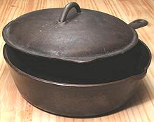
[Small Chikcen Fryer]
This was my primary cooking vessel for many years, pretty much all the
way through my vegetarian decade, and it served very well. It's similar
to a traditional chicken fryer but smaller at 3-1/2 quarts rather than 5
quarts. This one is 10-1/4 inches by 2-7/8 inches deep. Made in USA, #7,
but manufacturer unknown. Lodge has one (L8DSK3) just like it but with a
helper handle. Iron or glass lids sold separately.
Cast Iron Chef's Skillet
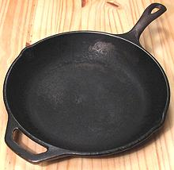 This 10-1/4 inch chef's pan is my primary skillet. It differs from the traditional skillet in having rounded sides rather than a sharp corner and straight sloped sides. Some consider the chef's pan a sort of Western wok. It has a little less flat area in the bottom than a traditional skillet but is easier to stir and tumble things in. Lodge LCS3, also P10S3 (10-1/4 inch) and P12S3.(12 inch).
I also have a 9 inch cast iron chef's skillet from an unknown US
manufacturer that's absolutely perfect for making a 4 egg tortilla (an inch
thick Spanish omelet). The gently rounded sides make it easy to turn the
omelet out and slide it back in on the other side, and the heavy iron is
non-stick and distributes the heat perfectly. It's also very nice for
smaller frying jobs.
Cast Iron Skillet
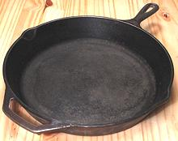 This traditional form skillet comes in many sizes. Mine is a 12 inch Lodge and I also also have a 15 inch by an unknown US manufacturer, but that one is seldom used. In these large sizes I'm more concerned with flat surface area than with stirring stuff, so the traditional form with its sharper corners is fine. Lodge has a line of these skillets ranging from 3-1/2 inch to 15-1/4 inch. The 3-1/2 inch is used for melting butter and heating oil, but it would also be a good tadka (tempering) pan for the cuisines of southern India.
Cast Iron Round Griddle / Comal / Tava
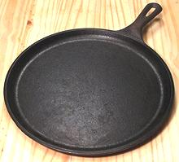
This 10-1/2 inch round 1/2 inch deep griddle gets a lot of use here.
It's perfect for dry roasting spices for Indian curries (the traditional
concave Tava doesn't work well on Western stoves) and for dry or lightly
oiled toasting of nuts and sesame seeds for cuisines of Asia, Africa and
the Middle East. It also serves as a Mexican comal and is great for
heating Tortillas, Chapatis, Roti, Pappadam and other flat breads. I
highly recommend this pan for anyone with an interest in ethnic cuisines.
Mine is a Lodge L9OG3 but there are several other manufacturers of nearly
identical pans. Lodge suggests using this pan also for grilled sandwiches,
quesadillas and roasted vegetables.
Cast Iron Bastable Oven
 [Camp Dutch Oven (Lodge)]
[Camp Dutch Oven (Lodge)]
Successor to the traditional Irish cauldron, this pot can be suspended
over the fire as the cauldron was, but it's actually designed to be set
in hot coals, with more hot coals shoveled onto the deeply rimmed lid.
With heat from both top and bottom, this is how the Irish baked bread
in fairly recent times. Previously they used a hot flat stone with the
cauldron inverted over it to contain the heat - the new way is much
better. Lodge calls this a "Camp Dutch Oven" for its usefulness on
open fires - and because very few today would know what a Bastable Oven
is.
Cast Iron Wok
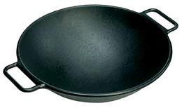 I've read cooking experts saying woks are made of cast iron - but that's because they don't know cast iron from sheet steel - cast iron woks are very rare. I inherited a nice Japanese made one but I can't find it right now so I'm borrowing this photo from Lodge until it turns up. Theirs is the standard 14 inches while my Japanese wok is 13 inches, the minimum useful size.
I have found the cast iron wok less than ideal because it takes a long time to heat up and doesn't respond quickly to changes in heat from the burner. My aluminum core stainless wok is much faster, but for true Chinese level temperature control you want a sheet steel wok (see below).
Guangzhou China - For the Cantonese cuisine of Guangzhou, many
chefs insist on cast iron woks, but their woks are very thin,
so thin they are extremely fragile and have a short life time, so you
have to have spares. These woks are not availble in North America, and
are not much used in other regions of China, where the sheet steel wok
predominates.
Sheet Steel Pans
Sheet Steel Comal
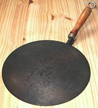 [Budare (South America); Tava (India)]
In Mexico the comal is more often of cast iron, or out in the villages
of pottery, but this US made 11 inch sheet steel version also serves
very well for heating Tortillas, Chapatis, Roti, Pappadam and other flat
breads. Since I also have the Lodge Round Griddle / Comal listed above,
I use this comal mainly as a surface upon which to blast bell peppers
and chilis black with a Kitchen
Torch - the only practical way to skin peppers.
Sheet Steel Omelet Pan
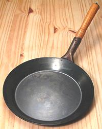 Being of the Dione Lucas school of omelet making, it's simply a matter of, "you touch my omelet pan - you die". I differ from Ms. Lucas, however, in choice of pan. She favored a heavy cast aluminum pan with rounded sides like a chef's skillet, while I am entirely satisfied with this sheet steel pan with shallow sloping sides. In particular it responds instantly to changes in heat.
This 9-1/2 inch pan is perfect for 3 egg omelets. I presume it would
do 4 egg omelets just fine too, but I always make them with 3 eggs. An
omelet pan should never be washed. Should some egg stick to it (and it
should not), you scrub it out with coarse salt and a paper towel. It is
used only for French omelets, cooked in butter - nothing else. OK, I
confess. I have occasionally used it for things that were very similar
to French omelets, but which might even have used oil instead of butter.
Sheet Steel Wok
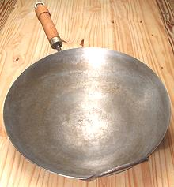 This is the kind of wok you want for authentic Chinese cooking. The instant temperature responsiveness of sheet steel is superior to all other materials - but you want the surface well seasoned or your sauces will taste of iron. Unfortunately, even a sheet steel wok won't work quite like they say in books. Restaurants (most writers of Chinese cookbooks have a restaurant background, and restaurant stoves in their homes) have burners fitted to the wok and are many times more powerful than your kitchen stove.
This most excellent wok was made in the late 1960s by Atlas Metal
Spinning in San Francisco - a very prestigous wok, but they are no
longer made. It is 14 inches in diameter - about the largest size
practical on a kitchen stove, while 13 inches is the bare minimum
for a wok.
Sheet Steel Indian Kadhai
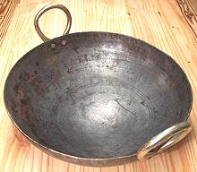 The Indian kadhai is the ultimate tool for deep frying. Superficially it looks like an East Asian wok, but it differs in having a tighter radius and higher sides. With a kadhai you can do deep frying with a minimum of oil and with amazingly little splatter escaping the pan. The high sides keep both the oil and the heat in where they belong.
The photo specimen, which I use for all my deep frying, is 14-1/2
inches diameter, made of heavy sheet steel formed in a press (thus some
rippling around the edges). It was purchased from an Indian appliance
store in Los Angeles, but that store no longer sells any "authentic"
Indian stuff, just cheap junk. Fortunately, I have found India Sweets
and Spices in Glendale CA now has real kadhais in several sizes (early
2017) Details and Notes.
Enameled Iron Cookware
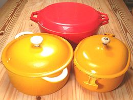 Enameled Iron is superb for braising, but for stovetop frying it has some of the same problem as stainless steel. It soon becomes not so good looking because of oil turning to brown varnish on it, which is why black enamel is used for most enameled skillets. Also, it doesn't take seasoning as well as bare iron so could have sticking problems.
Enameled iron is very sensitive to heat shock from sudden temperature changes and you need to be careful of that - don't pour cold stuff into a hot pan or the enamel may spall, and let an over-heated pan cool slowly almost to room temperature before attempting to clean it. People report spalling during rapid stovetop heating as well, particularly when new (probably invisible manufacturing defects). Make sure you get a good warranty and keep the paperwork.
Enameled iron is not eternal, because the enamel on the inside eventually dissolves. I had to retire a Le Creuset saucepan and a really nice Copco sauce pan due to bare iron being exposed after about a decade of very frequent use. The taste of iron in your soup is to be avoided.
Another consideration is that stovetop vessels are moved around and manipulated a lot, and enameled iron is even heavier than regular iron, and more fragile.
The big name in enameled iron is Le Creuset. Their quality and durability are excellent but their pricing is absurd - at least twice what it reasonably should be (a 5-1/2 quart Dutch oven is 2020 US $460 list, $288 on the Internet).
Caution: Most low cost enameled cast iron cookware is made in China, land of lead, melamine and every possible form of cheating on quality. You need to purchase from a major US brand that backs the quality and provides a warranty. About 10 years ago I bought an oval Dutch oven of Chinese brand, and iron was showing through the enamel after only a few uses.
Lodge has a line of enameled cast iron cookware from China that's getting good reviews (4-1/2 stars out of 5 on Amazon). Some report early failure of the inside enamel but that should be covered under warranty. Once it's been used for awhile it should be fine unless abused.
Shown in the photo are my three enameled iron dutch ovens, all
purchased in the late 1970s, and used almost entirely on the stovetop.
The 3-1/2 quart oval (Le Creuset) has been far and away the most used.
The 5 quart (Descoware, Belgium - no longer made) has seen substantial
service and the 7-1/2 quart (Copco, Denmark - no longer made),
wonderfully light for its size, hasn't been used at least a decade.
These days I cook in multi-ply stainless and serve in ceramic slow
cookers set to "keep warm". The Le Creuset oval needed the knob replaced
(with a ceramic drawer pull) and shows some bare iron but I still use
it now and then for non-acidic foods. I'm too cheap to buy a new one at
their current prices.
Enameled Sheet Steel
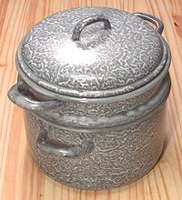 This form of cookware was very popular a many decades ago, before multi-ply stainless came on the scene, and is still sold but to a much lesser extent. Graniteware roasting pans are probably the most widely used today. It's main advantages were low cost and light weight compared to enameled cast iron and far better heat distribution than with single ply stainless. Being enameled it has the same bright colors, inertness and corrosion resistance as enameled iron.
The main disadvantage of this construction, and a major reason it has fallen out of use, is that it is easy to chip, so must be handled gently. a sharp hit on an outside corner will bend the steel enough to cause a spot of enamel to spall off on the inside. From this point on that spot rusts. This is not a serious problem for cooking most foods, but that spot will eventually rust right through.
The photo shows a steamer pot made in Holland. It was obviously designed by morons because the lid fits the steamer top but is too small for the pot. This means it can be used only as a steamer and not do double duity as a regular pot. Really dumb.
Seasoning and Maintenance
Cast iron (non enameled) and sheet steel cookware needs to be seasoned before it's used, but seasoning is not the hassle some people make it out to be. Seasoning is basically a coating of oil that has filled the pores in the metal, coated the surface completely and dried to a sort of varnish. A good seasoning is very non-stick, and unlike teflon non-stick coatings is self healing if scratched.
Seasoning doesn't have to be thick, black or opaque, it's fine to be able to see the metal through it. It's also fine for it to be opaque, but you shouldn't let it get too thick or it'll start flaking off in your food.
Seasoning:
- Wash the pan thoroughly with cleanser. If it's an old pan you can scour it out or even use very fine wet/dry sandpaper to clean it up. Some recommend putting it in a self cleaning oven and running the cleaning cycle to burn off all deposits. A new pan needs only cleaning.
- Wipe the pan thoroughly to coat with a high temperature oil like peanut or olive pomace. Some say to use bacon fat, not vegetable oil, but I know there be vegetarians amongst ye, as well as Jews and Muslims. Vegetable oil is fine.
- Put it on the stove and heat it to the point where it just starts to smoke, then turn off the heat and let it cool naturally to room temperature.
- Wipe it out with paper towels to remove all excess oil. If you have time, let it sit for a few days so the oil dries.
- One application is fine if the pan will be used for frying. If it will have extended contact with water and other non-oil liquids you don't want it to be giving your food a metallic taste, so it's best to give this procedure a couple more passes, or just use it for frying for the first few cycles until the seasoning firms up well.
Maintenance
Cast iron and sheet steel cookware is easy to maintain.
- Yes, you can wash the pan (unless it's your precious omelet pan (see above)) - in fact I clean mine with cleanser and just wipe them with oil again before hanging them up. The seasoning becomes quite durable after a few usage cycles and quickly incorporates the fresh oil.
- Always keep the pan lightly oiled to prevent rust and store it where it won't be exposed to moisture.
- I emphasize "clean" and "lightly oiled". A really oily pan or one that's not well cleaned will likely become rancid and taint the flavor of food cooked in it. The oil must be thin enough to dry before rancidity sets in. Pure olive oil and olive pomace oil are very resistant to rancidity.
- Don't let the seasoning get too thick or it'll start to chip off into your food. Your guests may question what the little black flakes are.
- OK, I confess - I'm a cast iron heretic! After heavy frying use, I actually scrub the pans out with a stainless steel wire pad and Comet Cleanser - then sometimes hang them up without oiling. Hasn't hurt them a bit - that seasoning is tough!
Links
- I1 - Cast Iron Cookware - Lodge Cast Iron